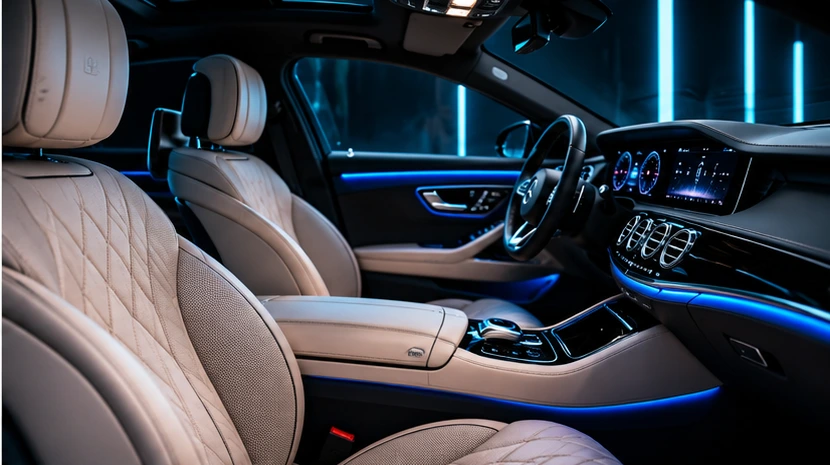
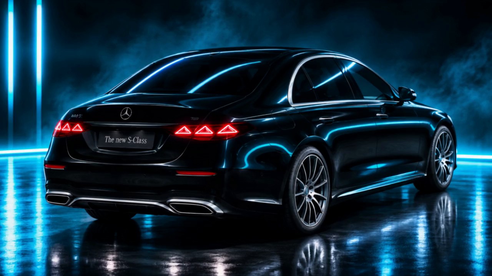
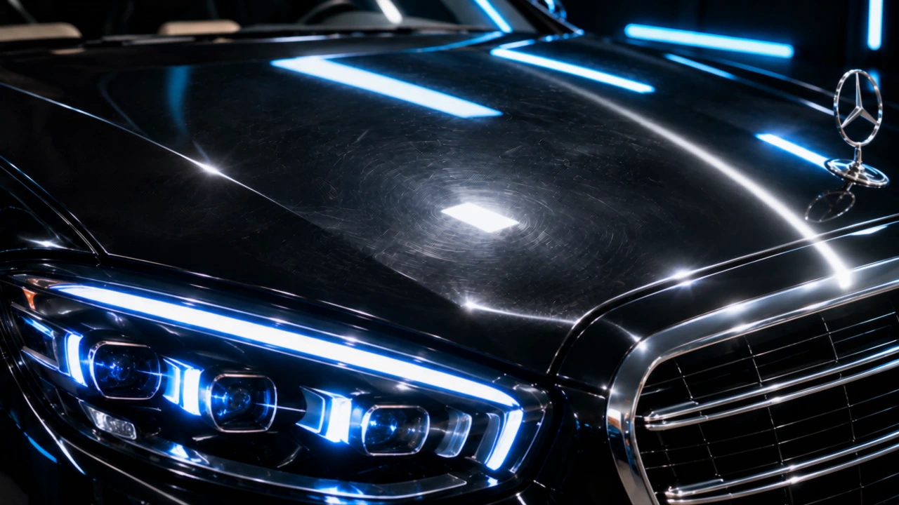
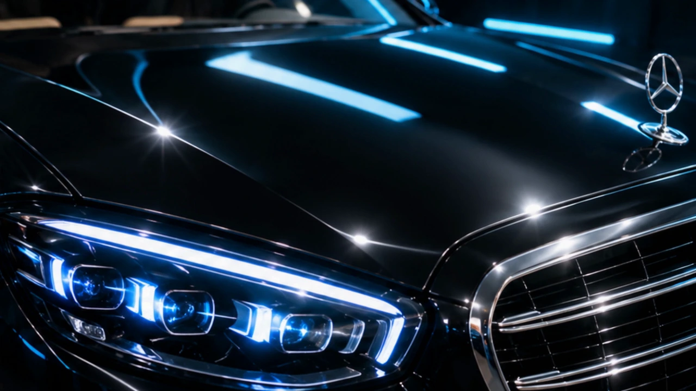
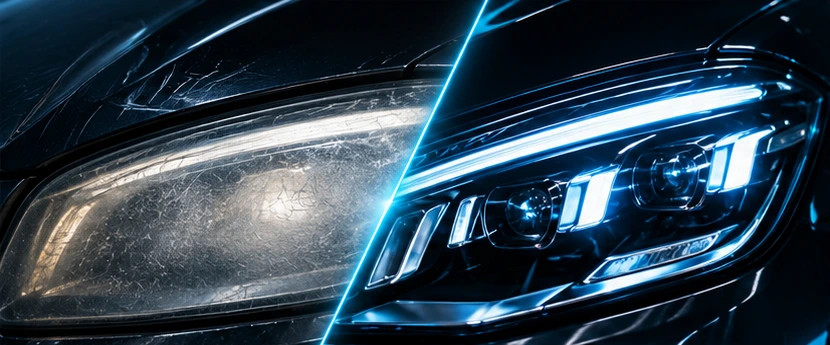
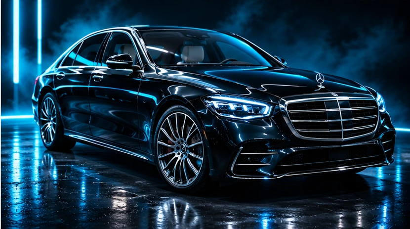

Greg’s Details · Exterior
Out of the dark.
The first light catches the grille and picks out the edge of the bonnet.
Bodywork · Side profile
Follow the reflection.
Watch the blue line travel along the doors as the car turns.
Bodywork · Rear quarter
The final angle.
The tail lamps come into view. Explore the care behind the finish.
Explore the ProductExterior wash
Start at
the surface.
Road film settles into the lines of a car. Exterior washing brings the bodywork back into view, from broad panels to the edges and recesses.


Interior care
Where you
feel the detail.
The cabin is the part of the car you live with. Interior care brings attention to the surfaces you sit on, reach for and touch on every drive.
Paint correction
Read the
reflection.
Direct light makes fine swirls visible. Follow the reflection across the bonnet to see the difference paint correction is intended to make.



Headlight restoration
Clarity up front.
Clouding softens the look of a headlight lens. Restoration focuses on the lens itself, where haze can obscure the contours beneath.

